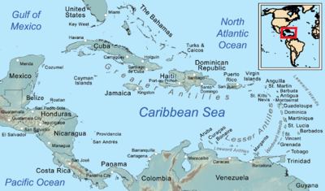

function set(input, value) {
input.value = value;
input.dispatchEvent(new Event("input", {bubbles: true}));
}
// WIDGETS ----------------------------------------------------
// {{< include ../scripts/W1A_map_stu_reg.js >}}
// {{< include ../scripts/W1B_map_stu_explo.js >}}
import {map_W1C} from "753e135be027a598"
import {map_W1D} from "9144ae793b906e41"
import {viewof select_W2A} from "126c3f60cbfdd337"
import {viewof rotate_W2A} from "126c3f60cbfdd337"
import {viewof nb_W2A} from "126c3f60cbfdd337"
import {plot_W2A} from "126c3f60cbfdd337"
import {wcd_W2A} from "126c3f60cbfdd337"
import {viewof select_W2B} from "90b110fea16bf260"
import {viewof year_W2B} from "90b110fea16bf260"
import {viewof rotate_W2B} from "90b110fea16bf260"
import {viewof nb_W2B} from "90b110fea16bf260"
import {plot_W2B} from "90b110fea16bf260"
import {wcd_W2B} from "90b110fea16bf260"
import {viewof select_W2C} from "dac79a00d1b1c9db"
import {viewof rotate_W2C} from "dac79a00d1b1c9db"
import {viewof nb_W2C} from "dac79a00d1b1c9db"
import {plot_W2C} from "dac79a00d1b1c9db"
import {wcd_W2C} from "dac79a00d1b1c9db"
// {{< include ../scripts/W3A_afc_stu_eur.R >}}
// {{< include ../scripts/W3B_afc_med_red.R >}}
// {{< include ../scripts/W3A_afc_stu_eur.js >}}
// {{< include ../scripts/W3B_afc_med_reg.js >}}
import {viewof select_W4A} from "4c80f41797fd5b8e"
import {viewof indic_W4A} from "4c80f41797fd5b8e"
import {map_W4A} from "4c80f41797fd5b8e"
import {viewof select_W4B} from "bbce317b3368f044"
import {map_W4B} from "bbce317b3368f044"
import {viewof select_W4C} from "1ea40eb67ef35c3b"
import {viewof year_W4C} from "1ea40eb67ef35c3b"
import {map_W4C} from "1ea40eb67ef35c3b"
import {viewof select_W4D} from "5b7fb13f448ac5ab"
import {map_W4D} from "5b7fb13f448ac5ab"
import {viewof idText_W5A} from "f9d6ef877e2214b8"
import {viewof nextText_W5A} from "f9d6ef877e2214b8"
import {viewof tradOnOff_W5A} from "f9d6ef877e2214b8"
import {textSel_W5A} from "f9d6ef877e2214b8"
import {ID_PI_W5A} from "f9d6ef877e2214b8"
import {viewof select_W7A} from "94666958dab9cbd4"
import {plot_W7A} from "94666958dab9cbd4"
import {viewof select_W7B} from "8212ef38b27b1816"
import {viewof indic_W7B} from "8212ef38b27b1816"
import {plot_W7B} from "8212ef38b27b1816"
import {plot_W7C} from "c8184cbec259712b"Where is the French Caribbean ?
Camille Dabestani
Now, we are going to change the focus.
The aim is to consider imaginaries on and by the French Caribbean on macroregions (see. Story 1 – see. Story 2).
The Caribbean is an area of interstice in representations of the world’s regions. It may be forgotten, considered as a margin of the American continent, not knowing if it is in North, South or central America (Didelon-Loiseau, De Ruffray, and Lambert 2018).
Martinique, Guadeloupe, Saint-Martin and Saint-Barthélémy are located in the Caribbean : at the interface of major regional groupings of the American continent, but also as and institutional and administrative links and statuses with France and the European Union.
There are a lot of macroregional imaginations that are at play in that context.
We are going to see how proximities, links, nuances, differences and distances are important in expressing imaginaries in the French Caribbean.
Martinique and Guadeloupe in the Caribbean space
A special status within the Caribbean region :
Martinique and Guadeloupe are « Départements et régions d’outremer » or DROM in the France
They are French territories, qualified as overseas in the French institutional framework. Martinique has had the status of territorial collectivity (in place of regional and departmental status) since 2015, and Guadeloupe the status of region.

Martinique and Guadeloupe are « Région UltraPériphériques » or RUP in the European Union
They are member of the EU with the status of Outermost Regions.
There are 9 European territories with this status due to there associations with EU member states.
That status consider that they are facing issues because of their “ultraperiphericity” to the European continent, of their insularity (not for French Guyana), their insertion into another regional grouping …
That ultraperiphericity is defined on the point of view of EU and Europe. In the point of view of the territory, it is different.
Martinique and Guadeloupe are associated with regional organizations.
They participate in regional economic and trade organizations in the Caribbean, notably the OECS, the ACS or the Caricom (Galy 2019, 2018).

They tend to have some distance from those organizaitons: Martinique and Guadeloupe are associate members of OECS and ACS (not full members) and in the case of the latter institution, the two collectivities are represented by the French state (and not on their own behalf). They are candidates to the Caricom.
The Caribbean is therefore an area of contact between American and overseas spaces.
It is a complex ensemble, a construct influenced by geographical, political and institutional structure, mobilities as well as social and postcolonial relations Cruse (2014).
For Martinique and Guadeloupe, the superimposition and interweaving of statuses, constructions, heritages and hierarchies produce a set of complex and multiple macro-regional imaginaries.
The production of geographical imaginaries thus appears to be an implicit and explicit political process, multiscalar and involving several actors (EU/Europe, State, community) (Piantoni 2009).
The Caribbean at the heart of imaginaries
Lets focus on the main macroregions that make sense for students in the French Caribbean, Martinique and Guadeloupe
Of the 275 regions traced by students, 90% include Caribbean island areas.
However, its definitions is variable, vague and the space is often segmented and/or associated with other macro-regional groupings in complex relationships.
Here, we look at the 10 most frequently given names: 1/3 of regions named directly Caribbean.
If we include the West Indies and associated subdivisions (Lesser and Greater Antilles : 40%) and the two territories surveyed (Martinique/Guadeloupe : 12%), it represents around 85% of responses in this Caribbean regional space.
A multitude of representations of the Caribbean
Cuba in the Caribbean
Haiti in the Caribbean
For others, their Caribbean region interrogate links to Haiti.
Haiti also appears as a node, an evoked frontier of the Caribbean space perceived by certain students. Discourses on the lack of consideration for Haiti in the Caribbean region and in French territories, including references to racism and the migratory context relating to the situation of political instability.
With Haiti, there is a paradoxical relationship of both historical and cultural proximity and distance from the political and economic image (Audebert 2011a).
Island Caribbean or Continental Caribbean
A lot of representation correspond to an “Island Caribbean”. But some of them integrate a “Continental Caribbean”.
Florida and more particularly Miami are important here.
They are a major location for Caribbean diasporas (Audebert 2016) and a major transport hub between the Caribbean and the world (Paris and Miami were the obligatory transport hubs for air travel outside the region) (Ranély Vergé-Dépré 2014).
Proximity to the USA remains on the bangs of representations, but when this country is evoked, it’s under the prism of Miami and Florida: the borders of the Caribbean integrate cultural, linguistic and geographical proximities with this key space.
Places of the seas in Caribbean macroregional imaginaries
As the Caribbean is often associated to seas, insularity, etc., what places have seas in their representations?
Whether insular or continental for students, the Caribbean often takes the Caribbean Sea, the Caribbean basin, as the anchor point for its definition (Cruse and Saffache 2013; Bégot and Buleon, n.d.).
Insularity and maritimity are among the elements that characterize the Caribbean (Rodriguez 2013; Roth and Buleon, n.d.).
For the majority of representations, it is the islands that constitute the routes taken.
But for some students, maritime spaces figure prominently in the definitions of their regions.
“Antilles” or “Caraïbe” ? “West Indies or Caribbean ?
A major ambiguity that emerges from both mental maps and discourse is based on the terms “Antilles” and “Caraïbe”. It is reflected both in the meanings given to the two words and in the associated spatial representations.
Those words appears as synonyms in different languages (Spanish, Dutch, English). In French, the definition of “Antilles” is narrower: it groups mainly Martinique and Guadeloupe (and Guyane in some definitions) (Cruse 2013).
Even if the Caribbean region is often distinguished as larger than the Antilles region (the former encompassing the latter), questions persist around the spatial definitions, delimitations and uses of the two terms.
For some people, “Antilles” and “Caraïbe” are synonyms, both spatially and semantically, and in the mental maps we have seen the two terms sometimes used interchangeably.
For others, the question of the difference, of the boundary between the two terms, intrinsically contains a notion of vagueness.
Differences expressed are spatial but mainly administrative or cultural for some students. For example, Antilles refer to French territories, or to French speaking Creole territories in the Caribbean (Sainte-Lucie, Dominique, Haiti).
For others, the differences expressed are spatial, but more a matter of point of view than definition. The term “Antilles” is also seen by some as an exogenous, a colonial denomination, given from France hexagonale.
Americas: between North and South, cultures, identities and politics
Relations between Caribbean and South America
In some representations, the Caribbean is also linked with South America, firstly thanks to French Guiana.
For some students, French Guiana is positioned as a link, a bridge between the Caribbean and South America.
Contexts are quite different in many sense (localization, neighborhood, economy, socio-cultural, etc.), but French Guiana, Guadeloupe and Martinique have indeed a common national situation, share a relative geographical proximity and common political and institutional stakes with their relation to France and EUrope.
Some students express their proximities with French Guiana, especially since there are students mobilities between those three territories (and commun university until 2014, now split in two universities: Université des Antilles and Université de Guyane).
There are also links with the whole South American continent.
The Caribbean and South America are linked for some students even beyond French Guiana. They tend to associate more the Caribbean to South America rather than North America.
That proximity may be based on socio-cultural aspect, but also through urbanization and architecture (Audebert 2011a).
South America is also perceived and associated with the expression of a political position, critical of colonialism and imperialism of the United States or Europe states, a belonging to the South (Bélaise 2007; Dubesset 2012).
Relations between Caribbean and North America: Canada and mobilities
We have seen that Florida and Miami may be included in the Caribbean. But students also see North America as a macroregion in relation to their Caribbean, particularly when they project of student mobility.
Institutional membership of the EU and the measures put in place direct student mobility, whether achieved or desired, towards Europe. However, belonging to the Caribbean and the American continent has created other prospects for mobility, towards North America, and more specifically Canada and Quebec (Chevallier 2017). The interests of both students and institutions are shifting.
On an institutional level, these student mobilities are promoted by the Canadian state and the Quebec region by creating exchange partnerships with French overseas communities such as Guadeloupe. The aim: to attract foreign students from a socio-economic and demographic perspective, away from major urban centers (Gagnon 2019).
Among students, Canada enjoys a very positive image of openness towards immigrant populations, and Quebec is identified by some as the “United States in French” (Chevallier 2017).
As discussed earlier for attractive places to study, North America is the most professionally attractive area, particularly Canada. In Europe, the United Kingdom stands out.France and Spain, for example, stand out for both tourism and work.
The Caribbean states and territories are largely associated with tourism.
Relations between Caribbean and North America
One element that came up is the in-between position, between two areas, between two continents.
Positions of in-betweenness (Rey 2013) or multi-affiliation (Pourchez 2014) with all or part of the spaces evoked are expressed in the discourses as well as in the mapping exercise through different strategies.
In the mental maps, this may involve the representation of several nested spaces and/or proposals for intermediate spaces, semantically or spatially, between North America, South America and Central America.
Relations with EU, Europe: a secondary imaginary
France and Europe in mental maps: external representations
European regions appeared on around of the mental maps, either alone or in combination with Caribbean regions. Names relating to Europe (e.g. EU, European Union) were also given in the same proportion.
Confusions between Europe and the EU are also important, as Europe is mobilized to express administrative and institutional status within the EU (see. Story 4).
In mental maps, there is no mention of RUP status or the notion of ultraperipherality. Rare references to the category “outremer” appear in the mental maps (“région d’outre-mer”, “France + outre mer” or “DROM”), mainly from students born in France hexagonale. That category regroup a very large range of contexts and questions. More than a practiced category, it is a political one (Beauvallet, Célestine, and Roger 2016).
When France and EUrope are drawn in mental maps, it often comes from students doing academic mobilities in Martinique and Guadeloupe through Campus France or Erasmus framework for example.
France and EU are institutions with which these students in mobility have to interact, and which define the territories where they are coming to study (Bertile 2014).
EUrope as margins ?
EU and Europe appear as margin in their representations.
Geographical remoteness, separation by an ocean and association with another continent are predictable elements in this distancing. The scale and size of the European space are also highlighted in the imaginations associated by students in the questionnaire.
Europe is also associated to EU institutions, domains and values (« schengen », « economy », « solidarity »).
Ambiguity in the relationship with Europe is central. Europe can be perceived as a distant entity, to be maintained as such, and associated with colonial ideologies.
(see. Story 1 – see. Story 2).
Words associated with Europe by students at the University of the West Indies (2814 occurrences, 853 different words)
EUrope: pragmatic representations
The vocabulary used to describe Europe in Martinique and Guadeloupe is quite similar to that in mainland France.
There is little idealization of Europe among the students: the critical dimension of the colonial heritage associated with Europe can be found at the margins, but it is above all the absence of economic or other idealization of Europe that emerges. In contrast to the responses to the survey in Tunisia and Turkey, the economically attractive dimension (towards the right of the graph) that Europe can represent appears only very rarely among students in Martinique and Guadeloupe.
Instead, the pragmatic and materialistic attributes of the European Union (to the left) are more prevalent (top of graph). (see. Story 1 – see. Story 2).
When asking about the opinion on EU specifically, nearly half of students indicate a “neutral” opinion.
For students, references to the EU are often associated with regional aid funds and schemes, but above all with student mobility programs for incoming students (Erasmus) and those wishing to undertake mobility.
Over the past thirty years, public action in these territories has been organized around three dynamics: decentralization, regionalization and Europeanization (Daniel, 2018). As a result, the EU and its funds are particularly visible in the public arena and therefore identified (Piantoni 2009; Daniel 2018).
(see. Story 1 – see. Story 2).
West Indies student’s opinion about Europe
Students who participate in that survey
Graphiques descriptifs : pole de l’université, genre, disciplines, niveaux (L1, etc.)
To sum up
In Martinique and Guadeloupe, macro-regional imaginaries are mainly concentrated in the Caribbean. However, they reveal a wide diversity of representations within this space, as well as relationships with the world.
The eastern part of the Caribbean is particularly prominent, due to its proximity.
We also see the emergence of plural definitions of a Greater Caribbean, at the heart of ambiguities and debates (Dubesset 2012).
Proximity, attachment or rejection towards a space or a group that may or may not be associated with its part of the world are expressed on socio-cultural or political levels, discussed around a number of divisive figures.
These macro-regions give expression to identities, through mobilities, practices and representations of an in-between, a multi-affiliation position or circulatory (Audebert 2010; Puig 2018).
Secondly, the transatlantic space and social field (Audebert 2011b; Condon 1996) figures in the expression of spaces and links evoked with French or European spaces, territories and institutions. But beyond these dynamics, the territorialities represented and/or desired are articulated more within the Caribbean region or the American whole.
For further information (in French)
On France Culture radio:
Other media:
- Podcast “Comment renouer le lien entre l’Hexagone et les Outre-mer ?”. Nouvelles écoutes, Splash Politique, 2022, 20min
- Emission “Les Antillais·es VS Clichés”. France TV Slash, 2022, 30min,
- Podcast “Outre-mer : décoloniser l’espace public”. Kiffe ta race, Binge Audio, 2020, 36min
- Bande dessinée de Jessica Oublié et Marie-Ange Rousseau “Peyi an nou”, Steinkis, 2017.
On the Oliwon Lakarayib platform, a digital platform dedicated to the Caribbean (videos and podcasts in SHS)”:
- Podcast “Migrations et diasporas dans la Caraïbe avec Cédric AUDEBERT”. Oliwon Lakarayib, 41min.
- Podcast “Les enjeux des transports aux Antilles françaises, une analyse à toutes les échelles avec Colette RANÉLY – VERGÉ – DÉPRÉ”. Oliwon Lakarayib, 28min*
- Podcast “Les Petites Antilles : objets de recherche en géographie avec Maurice Burac”. Oliwon Lakarayib, 33min
- Podcast “Une autre géographie de la Caraïbe : populaire et culturelle avec Romain Cruse”. Oliwon Lakarayib, 25min
References
Audebert, Cédric. 2010. “Constructions Sociales Héritées Et Productions Territoriales Antillaises : Une Contribution Géographique à l’analyse de Sociétés ‘Mobilisées’:” In Les Traites Et Les Esclavages, 257–73. Karthala. https://doi.org/10.3917/kart.cotti.2010.01.0257.
———. 2011a. “Régionalisme Et Migrations Dans La Caraïbe.” In La Caraïbe Dans La Mondialisation : Quelles Dynamiques Régionalistes ?, L’Harmattan, 23–37. Paris.
———. 2011b. “Les Antilles Françaises à La Croisée Des Chemins: De Nouveaux Enjeux de Développement Pour Des Sociétés En Crise.” Les Cahiers d’Outre-Mer 64 (256): 523–49. https://doi.org/10.4000/com.6409.
———. 2016. “Miami, Métropole-Carrefour Des Amériques. Réflexions à Partir de l’expérience Migratoire Haïtienne.” Problèmes d’Amérique Latine N° 96-97 (1): 105–21. https://doi.org/10.3917/pal.096.0105.
———. 2022. “La « Caribéanisation » Des États-Unis : Mutations Sociétales Et Réagencements Spatiaux.” L’Information Géographique Vol. 86 (1): 19–40. https://doi.org/10.3917/lig.861.0019.
Beauvallet, Willy, Audrey Célestine, and Aurélie Roger. 2016. “L’Etat Outre-Mer - La Construction Sociale Et Institutionnelle d’une Spécificité Ultramarine.” Politix, De Boeck Supérieur, no. 116 (April): 139–61.
Bégot, Monique, and Pascal Buleon. n.d. “Position Dans Le Monde.” Atlas Caraïbe, AREC,. http://atlas-caraibe.certic.unicaen.fr/fr/theme-15.html#.
Bélaise, Max. 2007. “Mondialisation Et Territoires Créolisés : L’inévitable Questionnement Identitaire.” In Les Caraïbes Dans La Géopolitique Mondiale, Ellipses, 179–93. Carrefours - Les Dossiers. Paris.
Bertile, Wilfrid. 2014. “Où En Sont Les Politiques Ultramarines de Mobilité ?” In Mobilités Ultramarines, 35–61. Paris: Editions des Archives contemporaines.
Chevallier, Carline. 2017. “La Mobilité Des Jeunes En Martinique. Les Initiatives de l’Espace Sud, Plateforme de Promotion de La Mobilité:” Cahiers de l’action N° 49 (2): 47–56. https://doi.org/10.3917/cact.049.0047.
Condon, Stéphanie. 1996. “Les Migrants Antillais En Métropole : Un Espace de Vie Transatlantique.” Espace Populations Sociétés 2-3: 513–20. https://www.persee.fr/doc/espos_0755-7809_1996_num_14_2_1778.
Cruse, Romain. 2013. “Introduction à La Caraïbe Perçue.” Caribbean Atlas. http://www.caribbean-atlas.com/fr/thematiques/qu-est-ce-que-la-caraibe/introduction-a-la-caraibe-percue.html.
———. 2014. Une Géographie Populaire de La Caraïbe. Collection Essai. Montréal: Mémoire d’encrier.
Cruse, Romain, and Pascal Saffache. 2013. “Définir Les Frontières de La Caraïbe : Une Introduction.” Caribbean Atlas. http://www.caribbean-atlas.com/fr/thematiques/qu-est-ce-que-la-caraibe/definir-les-frontieres-de-la-caraibe-une-introduction.html.
Daniel, Justin. 2018. “De Quoi Les "Outre-Mer" Sont-Ils Aujourd’hui Le Nom ?” In Penser Et Repenser Le Postcolonial Dans Le Monde Atlantique, L’Harmattan, 43–59.
Didelon-Loiseau, Clarisse, Sophie De Ruffray, and Nicolas Lambert. 2018. “Mental Maps of Global Regions: Identifying and Characterizing "Hard" and "Soft" Regions.” Journal of Cultural Geography 2 (35): 210–29.
Dubesset, Éric. 2012. “Penser Autrement l’identité Régionale Caribéenne.” Études Caribéennes, no. 21. https://doi.org/10.4000/etudescaribeennes.5739.
Gagnon, Véronique. 2019. “Être Étudiant d’origine Étrangère En Région Au Québec:” Journal of International Mobility N° 6 (1): 119–33. https://doi.org/10.3917/jim.006.0119.
Galy, Karine. 2018. “La Gestion Des Programmes de Coopération Territoriale En Vue de Construire La Grande Caraïbe : Freins Et Opportunités.” In L’Union Européenne Et La Coopération Régioànale Des Outre-Mers. Vers Un Renforcement Du Soutien Européen ?, L’Harmattan, 293–308. Grale. Paris.
———. 2019. “L’adhésion Des Collectivités Infra-Étatiques Aux Organisations Régionales. Enjeux de La Participation Des Collectivités Territoriales Françaises d’Amérique Dans Les Organisations Régionales de l’espace Amérique-Caraïbe.” Etudes Caribéennes, no. 42 (April): 1–17.
Piantoni, Frédéric. 2009. “Marquages Territoriaux Et Catégories Sociales Dans l’espace Ultramarin Français.” L’Espace Politique, no. 6 (March). https://doi.org/10.4000/espacepolitique.1090.
Pourchez, Laurence. 2014. “Métissage, Multi-Appartenance, Créolité à l’île de La Réunion.” Anthropologie Et Sociétés 38 (2): 45–66. https://doi.org/10.7202/1026164ar.
Puig, Stève. 2018. “France/Etats-Unis/Caraïbe : Le Développement d’une Pensée Postcoloniale.” In Penser Et Repenser Le Postcolonial Dans La Monde Atlantique, Harmattan, 31–42.
Ranély Vergé-Dépré, Colette. 2014. “La Desserte Aérienne de l’archipel Des Antilles : Entre Extraversion Et Intégration Régionale.” Géotransports, no. 3 - Transport et territoires insulaires: 23–38. https://irp.cdn-website.com/bf2583a0/files/uploaded/bK5phIYJSdCpTYq8Gcwa_G3-4-pp%2023-38%20-%20Desserte%20ae%CC%81rienne%20des%20Antilles%2C%20C.Rane%CC%81ly%20Verge%CC%81-De%CC%81pre%CC%81.pdf.
Rey, Violette. 2013. “Concepts Flous Pour Réalités Ambiguës, Comment Lire La Balkanisation Avec « l’entre-Deux ».” Anatoli, no. 4 (October): 93–107. https://doi.org/10.4000/anatoli.466.
Rodriguez, José M. Mateo. 2013. “Qu’est Ce Que La Caraïbe ? Vers Une Définition Géographique.” Edited by Romain Cruse and Rhiney. Caribbean Atlas. http://www.caribbean-atlas.com/fr/thematiques/qu-est-ce-que-la-caraibe/qu-est-ce-que-la-caraibe-vers-une-definition-geographique/.
Roth, Patrice, and Pascal Buleon. n.d. “Découpage de La Mer.” Atlas Caraïbe. http://atlas-caraibe.certic.unicaen.fr/fr/theme-15.html#.